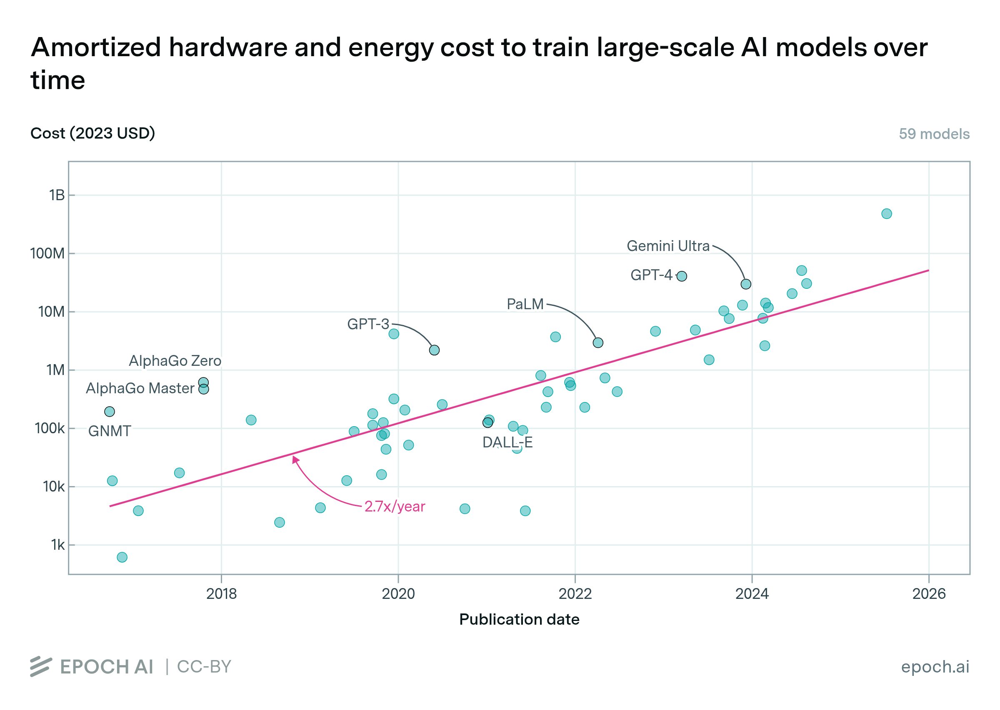

Efficient AI
Course Logistics
Aditya Desai · July 29th 2026
Size of AI is huge and it is only growing!

Training models requires more and more compute

Cost of training is already exorbitant
- Cost of inference is generally much higher!

What kind of questions are we going to ask?
- Can I run this model in less memory?
- Can I run this model faster?
- Can I deploy this model with higher throughput?
- Can I train a model in lower memory?
- Can I train a model in less time?
In general:
- Can I do "X" using less resource "Y"
- X = "infer / train / etc"
- Y = memory / compute / communication
Systems Solutions
- Assumes that computational workload is fixed
- Under this constraint, try to improve resource utilization
- e.g. memory reduction -- offloading etc
- e.g. lower latency -- parallelization, scheduling etc
We ...
- Computational workload is NOT sacrosanct
- We can change the workload while maintaining the "quality"
- e.g. memory reduction -- we are allowed to change model parameters
- e.g. lower latency -- we are allowed to change architecture or execution of model
We ...
- Try to solve the fundamental bottlenecks that systems does not address
- e.g O(N^2) attention computation -- system will not try to reduce the complexity
- but we can!
- Important: The bottlenecks that we should solve are to be informed by the systems research
Pre-requisites
No official prerequisites are listed, but you are expected to be familiar with:
- Machine learning in general — models, computational graphs, forward pass, backward pass
- Transformer architecture — FFN, MoE, self-attention layers
- Linear algebra, Calculus basics
- Random variable analysis — expectation, variance, MSE of a RV
Course Elements
- Part 1: Lectures
- Part 2: Seminar
- Part 3: Project
- Part 4: Midterm and Final Paper Pen Exam
Grading
- Project: 60%
- Seminar: 20%
- End sem: 10%
- Mid sem: 10%
Lectures will cover topics like:
- Pruning
- Quantization
- Low-rank
- Projection-based learning
- Knowledge Distillation
- Parameter Efficient Fine-Tuning
- Execution efficiency
What This Course Is Not About
- System optimizations (parallelism, scheduling, etc.)
- CUDA programming
- LLM inference Engines
- For those topics, take Systems for ML (Prof. Mythili)
Seminars
Efficiency topics in LLMs
- Sparse attention (decode)
- Sparse attention (prefill)
- KV cache compression
- Speculative decoding
- Attention alternatives
- Semantic Caching / Model Routing / Miscellaneous topics
- and more.
Seminar Logistics
- Sign up for topics (FCFS) — Link to Sheet
- Up to 5 students per lecture — everyone reads all the papers and compiles a joint presentation / lecture.
- Seminars run in the last part of the semester (tentatively Oct 7th) — you have ample time to read on the topic.
-
Let D = day of presentation:
- D−7: meet to discuss / whiteboard the papers
- D−3: slide deck review
- Evaluated subjectively on participation in (D−7) discussions, (D−3) slide deck review, and the day-D presentation.
Project: Description & Resources
- Semester-long: develop a model compression recipe — given a model and target domain, compress while keeping performance.
- Reuse papers / GitHubs as starting points; iterate as we cover techniques in class.
- Domain: math. Exact eval dataset is hidden (leaderboard only).
- Resources: Kaggle, Google Colab, etc. for development.
Project: Tracks
- Track 1 (required): evaluate by memory alone (checkpoint size). Pure compression — no CUDA speedup required.
- Track 2 (required): memory, but techniques must be CUDA-speedup-capable in principle. Explain how; no kernels required.
- Track 2+ (bonus, optional): CUDA kernels + measured submodule speedups at scale. Open to mid-term top performers; A100/H100 access; used to push grades up.
Project: Evaluation & Timelines
- Two checkpoints: Sep 15 (mid-term) and Nov 15 (end-term), 2026.
- Each eval: (1) leaderboard position (2) detailed report — include what failed and what worked.
- Mid-term top performers → eligible for Track 2+. Top-k present ideas; code stays private until then.
- After mid-term talks: code snapshot shared; cite what you reuse. Keep iterating to end-term; updated code public after final eval.
- Slack Days: Since these are long term projects, we will not have any slack days. The snapshots of submissions will be taken at 11:59PM on the day of the checkpoint
Project: Weightage
Project = 60% of course grade. Track 2+: up to +5% over the total grade.
| Eval 1 — 50% | Eval 2 — 50% | ||
|---|---|---|---|
| Leaderboard | Report | Leaderboard | Report |
| 60% | 40% | 60% | 40% |
- Reports: PDF, ≤3 pages of text (figures/tables after). Over-length → not evaluated.
Project: Submission Details
- Max 1 submission / week; leaderboard updates weekly. Push compressed model to Hugging Face; submit the link (TA details later).
- Use the starter as a GitHub template → private repo. Add TAs + instructor; do not share with other students.
-
Eval uses
roll_no/<hf_model_name>/code.pyto reproduce → bf16. Freeze that file after submitting. -
Keep
pyproject.tomlup to date for dependencies. - Leaderboard is anonymized (scores only; you learn your own after eval).
Project Details
In some time, TAs will show you:
- How to get started
- How to make submissions
- How to use Colab / Kaggle for your work
- How the leaderboard will look , where to find it etc.
Project: AI Policy
- Code / ideation: any-AI — use any AI tools. Interesting usage is encouraged and rewarded when reported.
- Report writing: strict NO-AI — not even for grammar or spell-check.
- Any AI use in the report → grade of 0 for the entire project.
Project: Honor Code
Sign the honor-code pledge on every submission (end of the submission form):
“I hereby declare that this submission is my own work and I have not shared my code or artifacts with any other student. I understand that any violation of the honor code will result in a grade of 0 for the project.”
Office Hours
- Instructor: Wednesday (after class) 12:30–1:30
- TAs: to be added
All discussions regarding the course are expected to take place during course office hours.